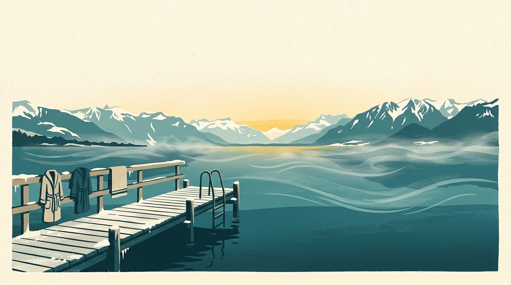

In breve
Per iniziare, il più sicuro è andare con altri: lo dice Graubünden Ferien, lo dice Helsana, e Zürich Tourismus raccomanda ai principianti un’offerta guidata. Ecco cosa abbiamo potuto verificare: l’Eisbadi di Arosa (workshop quotidiano per i principianti), corsi a Davos e St. Moritz, corsi guidati al Seebad Utoquai di Zurigo. Non abbiamo trovato un elenco ufficiale di club di bagno invernale in Svizzera, e non ne inventiamo uno.
Perché in gruppo?
Graubünden Ferien scrive che il bagno in acqua gelida si fa solo in compagnia: in gruppo è più divertente e più sicuro, se la circolazione cede nonostante la preparazione. Helsana chiede di venire con una seconda persona, per sicurezza, e la Società Svizzera di Salvataggio ricorda la regola dei minuti: tanti minuti quanti gradi ha l’acqua. Zürich Tourismus raccomanda ai principianti un’offerta guidata, che dà le basi e dei punti di riferimento.
Grigioni: acqua attorno allo zero, con accompagnamento
- Eisbadi Arosa: presentata come la prima Eisbadi della Svizzera, con un workshop quotidiano per i principianti; i posti per il bagno sono poi accessibili sempre agli esperti, e un vagone-sauna permette di riscaldarsi (Graubünden Ferien).
- Davos: Markus Blum propone corsi per principianti e avanzati, in una vasca sul lago di Davos, o per gli esperti in un buco nel ghiaccio del lago naturale (Graubünden Ferien).
- St. Moritz: si può fare il bagno nel lago ghiacciato dietro la Reithalle, con spogliatoi all’Eisarena Ludains; per i principianti, St. Moritz Outdoors propone un bagno nel ghiaccio accompagnato (Graubünden Ferien).
Zurigo: corsi e sauna
Secondo Zürich Tourismus, il Seebad Utoquai offre inizi strutturati, con corsi tenuti da professionisti. La città abbina anche bagno invernale e sauna: la Sauna am Fluss alterna il caldo a brevi bagni freddi nella Limmat, e il Saunaboot permette di nuotare nel lago di Zurigo dopo la sauna, in privato. Le nostre guide: il bagno invernale a Zurigo e le saune del lago.
Lemano e Tre Laghi
Ginevra e Losanna sono nella guida il bagno invernale sul Lemano, Neuchâtel, Bienne e Morat in il bagno invernale nei Tre Laghi. Per riscaldarsi dopo: le saune del Lemano.
Cosa non abbiamo potuto verificare
Non abbiamo trovato un elenco ufficiale di club o gruppi di bagno invernale in Svizzera, e Graubünden Ferien cita un’associazione di categoria, la «Swiss Cold Training Association», di cui non abbiamo letto le pagine. Se organizzate un’uscita regolare e volete che venga citata, scriveteci: la verificheremo prima di pubblicarla.
Prima di partire: un programma di 4 settimane, l’attrezzatura. L’acqua del momento è nell’app.
L’acqua del lago in questo momento
La temperatura dell’acqua di ogni spiaggia è nell’app Il mio lago, aggiornata ogni tre ore.
Avvertenza. Questo articolo fornisce informazioni generali tratte dalle fonti citate; non sostituisce il parere di un medico. Fare il bagno in acqua fredda sollecita molto il cuore e può essere pericoloso: chiedi consiglio a un medico prima di iniziare, in particolare in caso di problemi cardiaci, pressione alta o gravidanza. Non fare mai il bagno da solo e segui le indicazioni dei bagnini. Ognuno pratica a proprio rischio; in caso di emergenza, chiama il 144 in Svizzera o il 112.